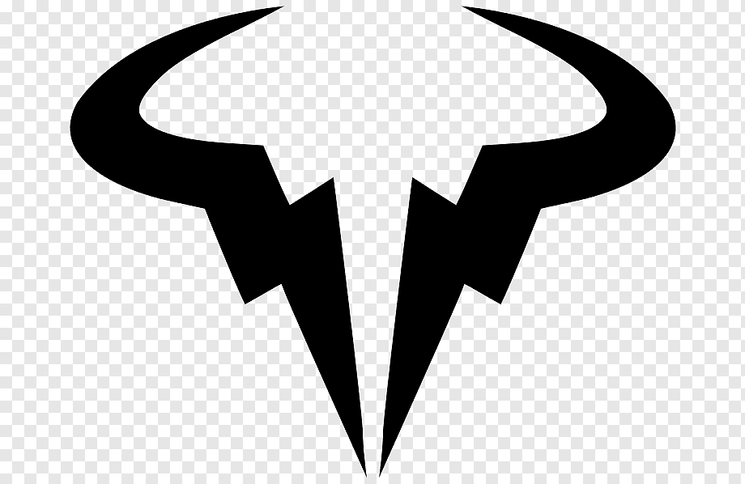
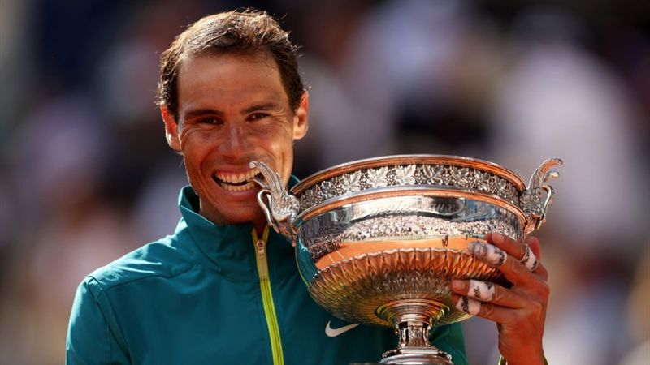
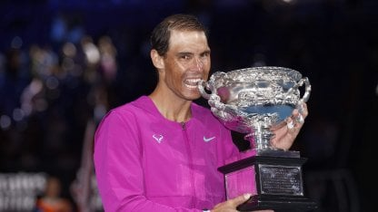
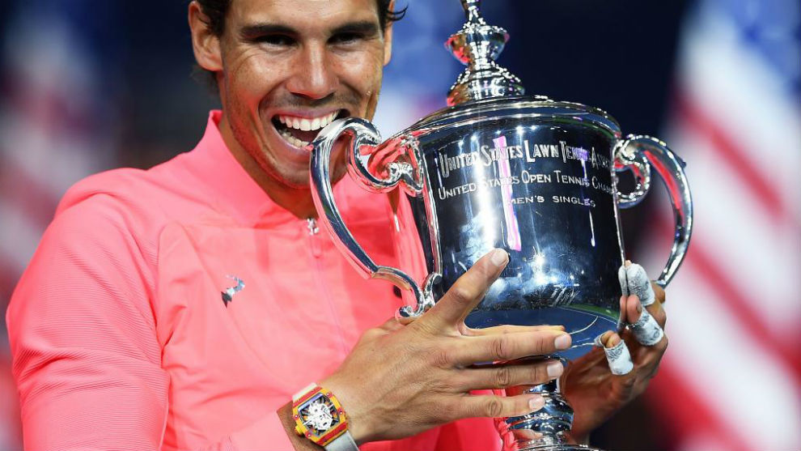
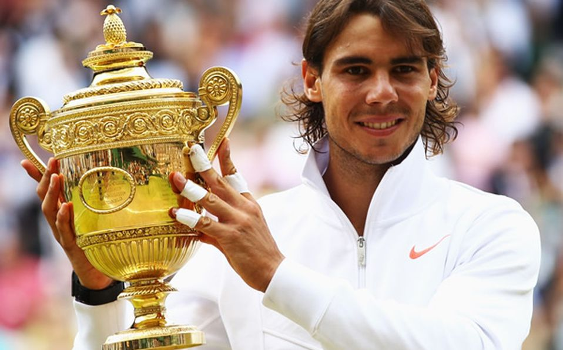

Para introducir todo su trayecto como tenista profesional a nivel mundial, comenzaremos con uno de sus primeros logros más importantes, como su primer Roland Garros, ya que es el tenista que más Roland Garros ha ganado en la historia del tenis.
En 2005 alcanzó la élite del tenis mundial con una temporada espectacular. En el primer Grand Slam de la temporada, el Abierto de Australia, venció en la primera ronda a Julien Benneteau por 6-0, 6-4 y 6-2, en la segunda ronda vence a Mijaíl Yuzhny por 6-1, 4-6, 4-6,7-5 y 6-3, en la tercera ronda vence a Bobby Reynolds por 6-1, 6-1 y 6-3, para caer en la cuarta ante Lleyton Hewitt por 5-7, 6-3, 6-1, 6-7 y 2-6.
En Montecarlo se adjudicó el primer Masters Series de su carrera al ganar en la final a Guillermo Coria por 6-3, 6-1, 0-6 y 7-5. Se convirtió en el segundo jugador más joven en ganar un torneo Masters Series tras Michael Chang. En Roma volvió a ganar otro Masters Series al triunfar en la final ante Guillermo Coria por 6-4, 3-6, 6-3, 4-6 y 7-6, en una final que duró 5 horas y 14 minutos. En mayo, disputó su primer Roland Garros, en la primera ronda venció a Lars Burgsmüller por 6-1, 7-6 y 6-1, en la segunda ronda venció a Xavier Malisse por 6-2, 6-4 y 6-4, en la tercera ronda venció al francés Richard Gasquet por 6-4, 6-3 y 6-2, en la cuarta ronda venció al francés Sébastien Grosjean por 6-4, 3-6, 6-0 y 6-3, en cuartos de final venció a David Ferrer por 7-5,6-2 y 6-0, en semifinales derrotó al número uno Roger Federer (6-3, 4-6, 6-4 y 6-3) y alcanzó su primera final de Grand Slam. El domingo 5 de junio se convirtió en el cuarto jugador más joven de la historia en ganar ese torneo (a la edad de diecinueve años y dos días), al vencer al argentino Mariano Puerta en la final, por 6-7, 6-3, 6-1, 7-5. Además se convirtió en el segundo jugador en ganar Roland Garros en su primera participación por detrás de Mats Wilander.
En octubre protagonizó una de las finales más épicas del año al derrotar al croata Ivan Ljubičić en la final del Tenis Masters Series de Madrid, Nadal remontó dos sets en contra para ganar su primer TMS en pista cubierta. Una inoportuna lesión, fruto de malos apoyos, le dejó fuera del torneo de Maestros, privando su primera participación en el torneo por excelencia de la ATP. Sin embargo, este año igualó al número uno Roger Federer como el tenista del circuito ATP con más títulos ganados, ganando un total de 11 torneos a lo largo de 2005 (Costa Do Sauípe, Acapulco, Barcelona, TMS Montecarlo, TMS Roma, Roland Garros, Bastad, Stuttgart, TMS Montreal, Abierto de China y TMS Madrid). Codiciado por las marcas comerciales, y admirado y querido por millones de personas, se convirtió en la nueva imagen del tenis masculino, joven, con garra y talento. Cerró el año con un récord de 79-10.
Por último comentaremos como ha sido su último año viendo un contraste de todos sus logros individuales a lo largo de su trayectoria como tenista.
El 17 de enero arrancaba el Abierto de Australia y lo hacía en medio de una gran polémica, tras la baja de última hora del favorito al título y número uno del mundo, el serbio Novak Djokovic, al serle denegada la entrada al país por no estar vacunado contra el COVID-19. Nadal quedaría situado en el mismo lado del cuadro que el alemán Alexander Zverev y el italiano Matteo Berrettini y debutaba con un cómodo triunfo en primera ronda ante el estadounidense Marcos Giron por 6-1, 6-4 y 6-2. En segunda ronda daría cuenta del alemán Yannick Hanfmann por 6-2, 6-3 y 6-4, y en tercera ronda vencería, en su primer partido exigente, al ruso Karén Jachánov por 6-3, 6-2, 3-6 y 6-1. Rafa alcanzaba los octavos de final del torneo, donde se mediría al francés Adrian Mannarino al que también vencería con facilidad por 7-6, 6-2 y 6-2. Nadal alcanzaba los cuartos de final del torneo por decimocuarta vez en su carrera (marca sólo superada por el suizo Roger Federer, con quince), donde se enfrentaría al joven canadiense Denis Shapovalov, y al que derrotaría por 6-3, 6-4, 4-6, 3-6 y 6-3, en un partido que se alargó más de cuatro horas y en el que el español sufrió un golpe de calor que lo tuvo al borde de la retirada. Tras esta victoria marcada por la épica, Nadal volvía a las semifinales del Abierto de Australia tres años después, la trigésimo sexta en su cuenta particular (tercera marca histórica). En ellas, se mediría al italiano Matteo Berrettini, al que vencería en apenas tres horas por 6-3, 6-2, 3-6 y 6-3. El español, mostrando un nivel de juego excelente y una confianza como hacía meses que no mostraba, lograba acceder a la final del primer Grand Slam del año por sexta vez en su carrera y la vigésimo novena en su cuenta particular (tercera marca histórica). Su rival sería el favorito al título y número dos del mundo, el ruso Daniil Medvédev, con el que Rafa mantenía un head to head de 3-1 favorable a él, y al que derrotó en sus dos únicos enfrentamientos en finales: tanto en el Masters 1000 de Canadá en 2019 como en la final del Abierto de Estados Unidos también en 2019.
En un partido absolutamente memorable y que pasará a la historia del tenis y del deporte en general, el español realizó la mayor proeza de su carrera, exhibiendo un despliegue de tenis, pundonor y coraje durante más de cinco horas y veinte minutos, remontando por primera vez en su carrera una desventaja de dos sets a cero en una final de Grand Slam para derrotar al ruso por 2-6, 6-7, 6-4, 6-4 y 7-5. De esta forma, trece años después y tras cuatro finales perdidas, Nadal hacía historia conquistando su segundo título en el Abierto de Australia y su vigésimo primer Grand Slam. Con este triunfo, el español se convierte en el primer tenista masculino que alcanza esta marca en toda la historia del tenis, colocándose por primera vez en su carrera en primera posición, deshaciendo el empate que mantenía con el suizo Roger Federer y el serbio Novak Djokovic. El balear se convierte en el primer jugador de la historia en remontar una desventaja de dos sets a cero en una final del Abierto de Australia y es el segundo jugador de la Era Abierta, junto al serbio Novak Djokovic, en conseguir el Doble Grand Slam en carrera, es decir, levantar al menos dos veces cada uno de los cuatro Grand Slams a lo largo de su carrera. Con esta inolvidable victoria, Nadal suma el título número 24 en pista dura en su palmarés y el 90 en general, además de alcanzar las 501 victorias en pista dura y alarga su propio récord de ganar al menos dos títulos durante 18 años consecutivos. El español, tras cinco meses de ausencia en el circuito y con gran cantidad de dudas sobre su estado físico, comienza 2022 de la mejor forma posible y por primera vez conquistando dos títulos consecutivos, con una marca de diez victorias y cero derrotas.
El 22 de mayo arrancaba Roland Garros y lo hacía con Nadal en el cuadro principal, partiendo como cabeza de serie número 5 y mostrándose optimista, a pesar de sus problemas en el pie izquierdo.430 El balear quedó situado en el mismo lado del cuadro que el número uno del mundo, el serbio Novak Djokovic y el alemán Alexander Zverev. El balear debutó con una cómoda victoria ante el australiano Jordan Thompson por 6-2, 6-2 y 6-2, en segunda ronda vencería al francés Corentin Moutet por 6-3, 6-1 y 6-4 y en tercera ronda daría cuenta del neerlandés Botic van de Zandschulp por 6-3, 6-2 y 6-4. En octavos de final, Nadal vencería al joven canadiense Félix Auger-Aliassime por 3-6, 6-3, 6-2, 3-6 y 6-3, en un emocionante encuentro de más de cuatro horas y que se convirtió en el tercer partido en la carrera del español en la que se veía forzado a jugar un quinto set en el torneo, después de los disputados ante el estadounidense John Isner en 2011 y ante el serbio Novak Djokovic en 2013. El español accedía a los cuartos de final del torneo por decimosexta vez donde se vería las caras, por tercer año consecutivo, con el serbio y número uno del mundo: Novak Djokovic. En el que suponía el encuentro número 59 entre ambos y después de más de cuatro horas, Nadal se cobró venganza de la derrota sufrida en 2021 y venció al serbio por 6-2, 4-6, 6-2 y 7-6, mostrando un nivel de tenis espectacular y despejando dudas acerca de su nivel de juego. Rafa dejaba el head-to-head entre ambos en 29-30 favorable al serbio y accedía a las semifinales del torneo por decimoquinta vez. En ellas, se midió con Alexander Zverev quien, al inicio del tie-break del segundo set y con el partido dominado por Nadal por 7-6 en el primer set, se torcía el tobillo viéndose forzado a retirarse del encuentro. El español accedía a la trigésima final de Grand Slam de su carrera (marca sólo superada por las 31 finales de Roger Federer y de Novak Djokovic) y su decimocuarta final en Roland Garros, donde se enfrentaría al joven noruego Casper Ruud, al que Rafa aplastaría en poco más de dos horas por 6-3, 6-3 y 6-0. Nadal lograba así su vigésimo segundo título de Grand Slam, ampliando aún más la diferencia que mantiene con el suizo Roger Federer y el serbio Novak Djokovic en el palmarés, sumando su decimocuarto título de Roland Garros y convirtiéndose en el ganador más longevo en la historia del torneo, superando el récord de su compatriota, el español Andrés Gimeno, que lo logró con 34 años de edad. Además se convierte en el tercer jugador de la Era Abierta en lograr conquistar los dos primeros Grand Slams del año: el Abierto de Australia y Roland Garros, y es el tercer jugador en lograr un Grand Slam venciendo a cuatro jugadores del top 10, tras el suizo Roger Federer y el sueco Mats Wilander. Este título supone el octavo Grand Slam de Nadal pasados los 30 años (récord compartido con el serbio Novak Djokovic), el título número 92 en su palmarés y el número 63 en tierra batida. Al finalizar el encuentro y debido a los rumores surgidos por una posible retirada del tenis, Nadal declaró en rueda de prensa que haría todo lo posible por seguir compitiendo y participar en Wimbledon, tras revelar que tuvo que recurrir a infiltraciones en su pie izquierdo durante las dos semanas del torneo, debido al fuerte dolor que sufre en el mismo.
En toda su carrera ha ganado un total de 22 Grand Slams
| Roland Garros | 14 |  | Total |
|---|---|---|---|
| Open de Australia | 2 |  | 22 |
| Open de EEUU | 4 |  | |
| Wimbledon | 2 |  |